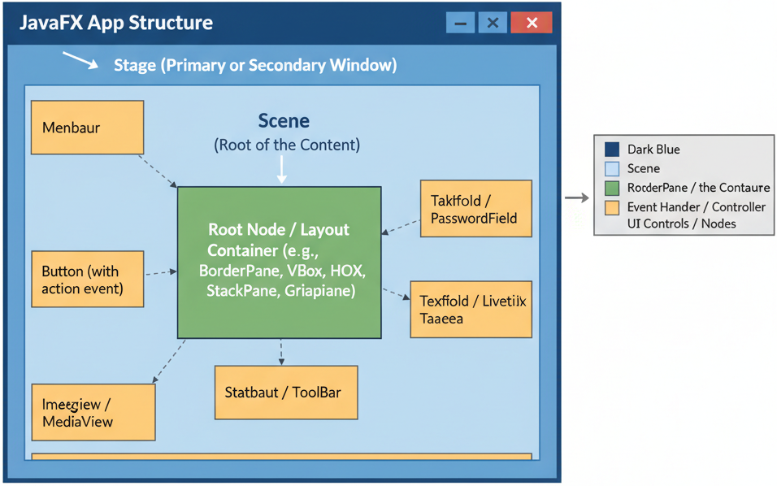

🎭 Introduction to JavaFX GUI – The Stage Where Your Code Performs
While teaching, I often relate concepts to real-world examples to make learning intuitive and engaging. For JavaFX, I drew inspiration from a familiar cultural practice: the South Indian Muggu—known as Rangoli in English—a decorative design traditionally drawn on the floor during festivals.
To make the concept tangible, I asked one of my students, Yasaswi (II CSE A NBKRIST), to draw a Rangoli on black-board. She first prepared the background and border, laying out the base design. On top of this, she carefully drew intricate patterns and placed small decorative doll like elements on some grids on the Rangoli.
This exercise beautifully illustrates the structure of a JavaFX application:
- The base of the Rangoli represents the Scene in JavaFX.
- The layout and arrangement of the Rangoli grid correspond to GridPane or other layout containers that organize UI elements.
- The Stage, or platform for the Scene, is like the floor on which the Rangoli is displayed.
- The decorative dolls and designs are analogous to JavaFX controls—buttons, labels, images—that are added on top of the layout.
- Event handling was explained through the figurines: just as a figurine can “react” when interacted with in the Rangoli setup, JavaFX controls respond to user actions through listeners and handlers, allowing the interface to respond dynamically.
🎨 Why GUI Development Matters in Modern Software Engineering
Having built and deployed software across platforms, I see GUI development as an essential craft, not just a skill. No matter how strong the backend, an application's success depends on intuitive user interaction. Modern users expect clarity, responsiveness, and visual feedback from every application. This applies to desktop tools, dashboards, or web-based analytics portals alike. Understanding GUI development is therefore fundamental for every aspiring developer. HTML, CSS, and JavaScript power web interfaces, while JavaFX leads in rich desktop applications. JavaFX blends visual design with robust backend logic for interactive and dynamic UIs. GUI development deepens knowledge of event-driven programming and modular architecture. It teaches user experience design, a skill transferable across technologies. Mastering GUI bridges functionality and usability, turning great code into software people love.
1.🪟 JavaFX Application Window Structure
Every JavaFX application begins with a class that extends the Application class. The application
window is structured around three main components:
- Stage: The top-level container representing the main window.
- Scene: Holds the visual contents (nodes) displayed inside the stage.
- Nodes: The actual UI elements such as buttons, text fields, and layouts.
The lifecycle of a JavaFX application involves init(), start(), and
stop() methods, allowing initialization, display, and cleanup tasks respectively.

2.🧩 Displaying Text and Images
JavaFX provides several classes to display text and images elegantly. Text can be displayed using
Label or Text classes, and images can be loaded with Image and displayed
using ImageView.
Label— to display simple text or icons.Text— allows customization like color, font, and alignment.ImageView— supports scaling, rotation, and effects for images.
These components can also be styled using CSS for a more appealing interface, making it easy to display multimedia content efficiently in JavaFX applications.
3.⚡ Event Handling
Event handling in JavaFX is a mechanism to respond to user interactions such as mouse clicks, key presses, or window actions. Each node in the scene graph can generate and listen to events.
Events can be handled using:
- Event Handlers: Implementing the
EventHandlerinterface or using lambdas. - Anonymous Classes: Useful for inline event logic.
- FXML Controllers: Linking event methods through FXML for button clicks and other actions.
Example: responding to a button click with setOnAction() method to trigger a specific task.
4.🛠️ Laying Out Nodes in Scene Graph
JavaFX organizes UI components in a hierarchical structure called the Scene Graph. The root node contains layout containers and controls arranged to form the complete interface.
Common layout containers include:
- VBox: Arranges elements vertically.
- HBox: Arranges elements horizontally.
- GridPane: Places elements in a grid-like structure.
- BorderPane: Divides the layout into top, bottom, left, right, and center sections.
Using appropriate layout managers ensures that the UI remains responsive and well-structured across different screen sizes.
5.🖱️ Mouse Events
JavaFX supports various mouse-based interactions such as clicking, dragging, hovering, and scrolling. The
MouseEvent class captures these actions and allows developers to define responses for each event.
- onMouseClicked — triggered when a node is clicked.
- onMouseEntered — activated when the cursor enters a node’s area.
- onMouseDragged — detects drag operations for interactive UIs.
For example, in an image editing app, you can implement drag-to-move or click-to-zoom functionalities using these mouse events. Handling mouse events is crucial for building engaging, interactive JavaFX applications.
6. JavaFX Scene Builder
JavaFX Scene Builder is a visual design tool that allows developers to create user interfaces (UIs) for JavaFX applications without writing FXML code manually. It provides a drag-and-drop environment to add UI elements such as buttons, labels, text fields, and images directly onto the layout pane.
Once designed, Scene Builder automatically generates the corresponding FXML file, which can be connected to a Java Controller class to handle application logic. It helps developers separate UI design from backend logic, improving productivity and maintainability. About JavaFX SceneBuilder
6.🎨 JavaFX Practice Questions
1️⃣ JavaFX Application Window Structure: What are the main components of a JavaFX application window, and how do they relate?
2️⃣ Displaying Text and Images: How can you show text and images in a JavaFX application?
Label or Text for text, and Image with ImageView for images.
Example: ImageView img = new ImageView(new Image("pic.png"));3️⃣ Event Handling: What is Event Handling in JavaFX, and how do you handle a button click?
button.setOnAction(e -> label.setText("Button Clicked!"));4️⃣ Laying Out Nodes in Scene Graph: What does laying out nodes mean, and name any two layout panes.
5️⃣ Mouse Events: What are mouse events in JavaFX, and how can you handle a click?
node.setOnMouseClicked(e -> System.out.println("Mouse Clicked!"));6. 🌟Key Summary Points on JavaFX
- 1️⃣ JavaFX is a Modern GUI Framework: It’s used to create interactive, visually rich desktop Graphical User Interface (GUI) applications using Java.
- 2️⃣ Core Structure: Every JavaFX app is built around Stage (window), Scene (content area), and Nodes (UI elements).
- 3️⃣ Layouts and Scene Graph: UI elements are arranged using layout panes like VBox, HBox, and GridPane inside a hierarchical Scene Graph.
- 4️⃣ Event Handling: JavaFX apps respond to user actions (clicks, key presses, mouse moves) through event listeners or lambda expressions.
⚡ These are the building blocks to start your JavaFX journey!